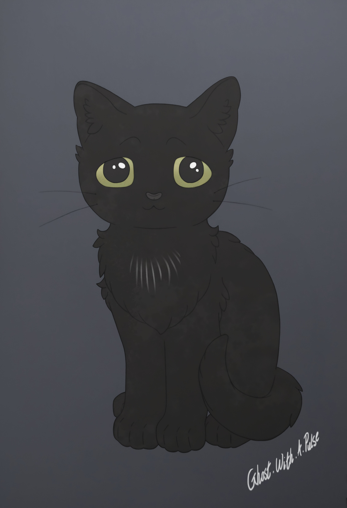
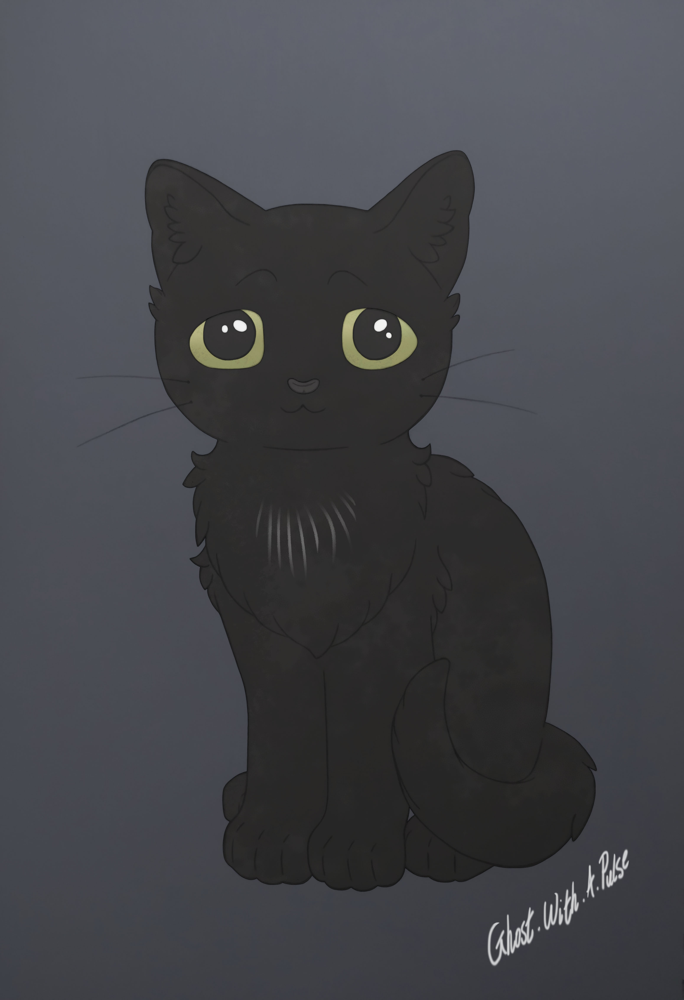
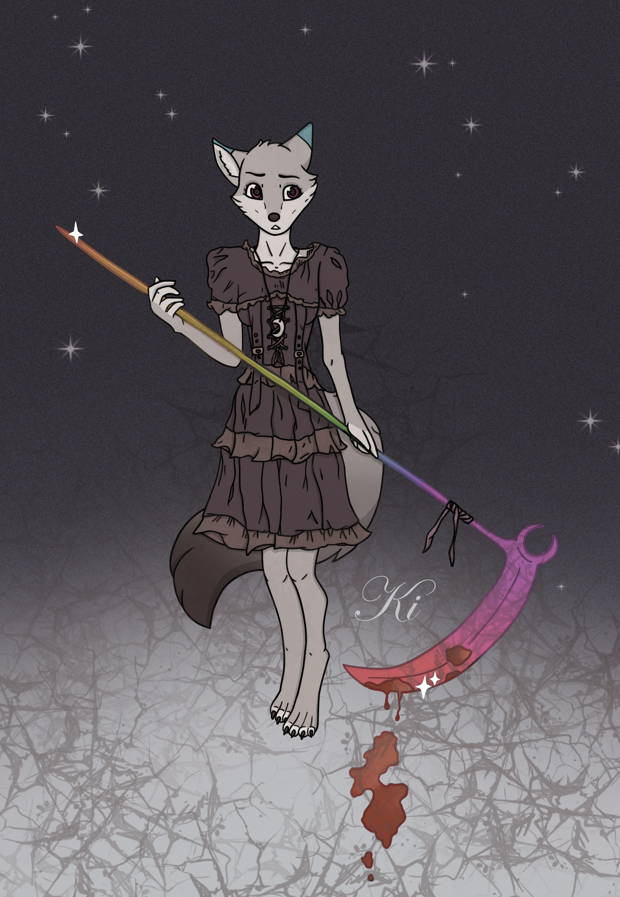
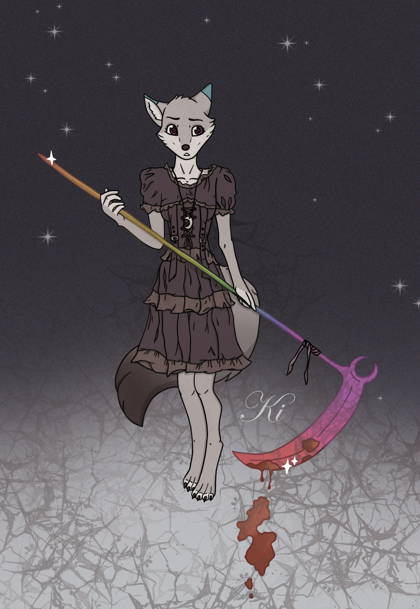
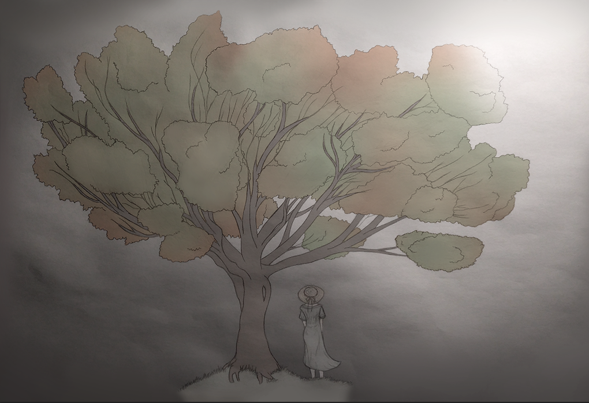
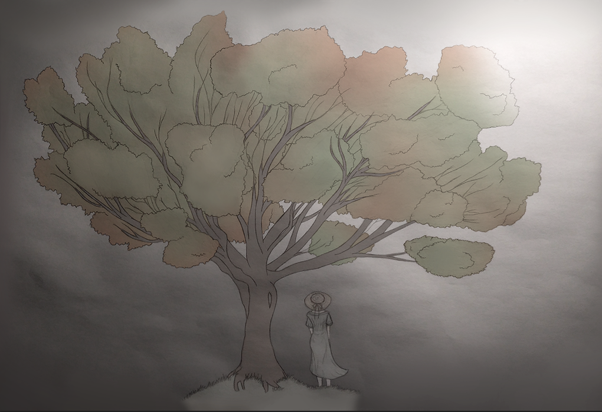

@ghost.with.a.pulse Online Art Portfolio
Character Illustrations
Tip: Click on the images below to find out more about each piece.


 



 



 

Personal character art based on GhostWithAPulse's childhood drawings.
Personal character art made for a 'Goretober' art prompt list. The prompt used for this one was 'bruises.'
Character art for a friend. This one belongs to Ven.
An entry for an art competition run by FurcoNZ.
Personal character art made for a post-apocalyptic themed event.
Gift art for CashPuppy.
Personal art of GhostWithAPulse's cat.
Gift art for TheDerpyHyena.
Personal character art.
Gift art for dazer_dude.
Personal character art - a train conductor from a whimsical story written by Oxillious and GhostWithAPulse.
Gift art of Raya - a character belonging to Heliocathus.
Four NPCs designed for the game, 'I Made You a Happy World' — a psychological fantasy game created by Ana Karpova, Tianze Xie & GhostWithAPulse.
Gift art of Nyx - a character belonging to Ava.
Gift art of Nyx - a character belonging to Ava.
Gift art of Obsidian - a character belonging to Alyss.
Gift art of Oxifawkes - a character belonging to Oxillious.
Personal character art - a drawing of a bizarre chimera dreamt up by GhostWithAPulse.
Gift art for Oxillious - fox girl and elf boy belong to Oxillious and GhostWithAPulse respectively.
Gift art for an anonymous friend on Facebook of their character.
Gift art for Railfur93.
An entry for a Christmas art competition run by Yoobee Colleges.
A fun little personal art piece. Characters belong to GhostWithAPulse.
Personal art for a 'Goretober' art prompt. The prompt used for this one was 'claws.'
Personal character art made for the opening scene in the game, Dearest Demons - a psychological horror game currently being developed by GhostWithAPulse.